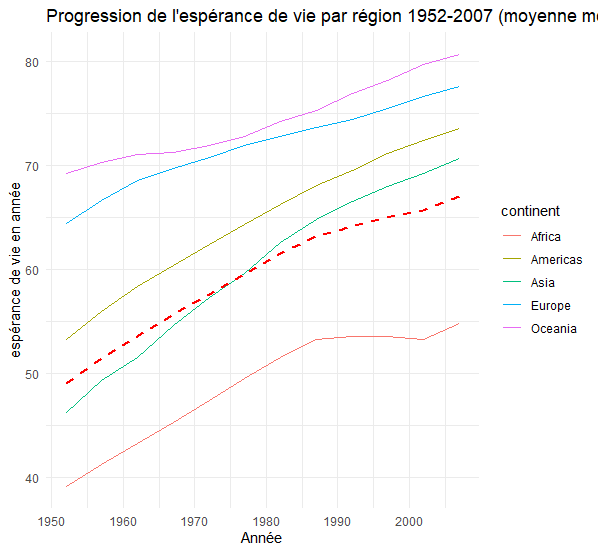

Page de l'analyse de données
Ceci est la page contenant l'analyse de données.
Graphique exemple
Section 1
Tableau exemple
| year | correlation | correlation_spearman | sample_size | |
|---|---|---|---|---|
| 1 | 1952 | 0.278023621062246 | 0.768700583204629 | 142 |
| 2 | 1957 | 0.303744503998097 | 0.782120786016501 | 142 |
| 3 | 1962 | 0.383221061926961 | 0.796956351813812 | 142 |
| 4 | 1967 | 0.480139789527731 | 0.794634427969979 | 142 |
| 5 | 1972 | 0.459701395203974 | 0.806723094106972 | 142 |
| 6 | 1977 | 0.619863846024395 | 0.827540754121515 | 142 |
| 7 | 1982 | 0.722762853811143 | 0.86076853922224 | 142 |
| 8 | 1987 | 0.749905406709913 | 0.892465378083247 | 142 |
| 9 | 1992 | 0.704714829536974 | 0.897241248516547 | 142 |
| 10 | 1997 | 0.703643585188825 | 0.895065078763011 | 142 |
| 11 | 2002 | 0.681857787794637 | 0.865274072645964 | 142 |
| 12 | 2007 | 0.678662398677759 | 0.856589918921354 | 142 |
Section 2
Contenu section 2
Section 3
Section 3.1
…